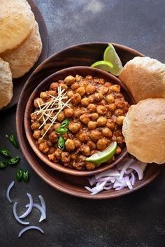

Chhole Bhature

Description
Chhole Bhature is a popular North Indian dish that consists of two main components: chhole (spiced chickpeas) and bhature (deep-fried bread). It is a beloved street food and a favorite in Punjabi cuisine.
Ingredients
For Bhatura
- 2 cup maida
- 2 tbsp rava / semolina (fine)
- 1 tsp sugar
- ¼ tsp baking soda
- 1 tsp sugar
- ½ tsp salt
- 2 tbsp oil
- ¼ cup curd
- water (for kneading)
- oil (for frying)
For Pressure Cooking Chhole
- 1 cup chana / chickpea (soaked overnight)
-
- 2 tea bags
- ¼ tsp baking soda
- 1 tsp salt
- 3 cup water
For Chhole Preparation
- 2 tbsp oil
- 1 bay leaf
- 1 black cardamom
- 2 pod cardamom
- 1 inch cinnamon
- 1 tsp cumin / jeera
- ½ tsp kasuri methi
- 1 onion (finely chopped)
- 1 tsp ginger garlic paste
- ¼ tsp turmeric
- 1 tsp chilli powder
- 1 tsp coriander powder
- ½ tsp cumin powder
- ½ tsp garam masala
- 1 tsp aamchur
- ¼ tsp salt
- 1½ cup tomato puree
- 2 tbsp coriander (finely chopped)
For Tempering
- 1 tbsp ghee / clarified butter
- 2 chilli (slit)
- ¼ tsp turmeric
- ¼ tsp chilli powder
- ¼ tsp garam masala
Steps
For Making Bhatura
- Firstly, in a large bowl take 2 cup maida, 2 tbsp rava, 1 tsp sugar, ¼ tsp baking soda, 1 tsp sugar, ½ tsp salt and 2 tbsp oil. mix well. Now add ¼ cup curd and mix well making sure everything is well combined. Further, add water as required and knead the dough.
- Knead to the smooth and soft dough without putting much pressure. Grease the dough with oil, cover and rest for 2 hours. After 2 hours, knead the dough slightly.
- Pinch a ball sized dough and make a ball without andy cracks.
roll slightly thick, applying oil to prevent from sticking.
drop the rolled dough into the hot oil.
- Press until the bhature puffs up and splash oil to puff up fully. Flip over and fry until it turns golden brown.
- Finally, drain off the bhatura and is ready to enjoy with chole masala.
For Making Chhole
- Firstly, in a pressure cooker take soaked chana. I have soaked 1 cup chana in enough water for 8 hours.
- Add 2 tea bags, ¼ tsp baking soda, 1 tsp salt and 3 cup water.
- Cover and pressure cook for 5 whistles. If you do not have tea bags, then you can prepare tea decoction and add to cooker.
- Once the pressure releases, open the cooker and discard the tea bags. Keep aside.
- In a large kadai, heat 2 tbsp oil, 1 bay leaf, 1 black cardamom, 2 pod cardamom, 1 inch cinnamon, 1 tsp cumin, ½ tsp kasuri methi. Saute on low flame until the spices turn aroamtic.
- Now add 1 onion, 1 tsp ginger garlic paste and saute until onions turn golden brown.
- Add ¼ tsp turmeric, 1 tsp chilli powder, 1 tsp coriander powder, ½ tsp cumin powder, ½ tsp garam masala, 1 tsp aamchur and ¼ tsp salt.
- Saute on low flame until the spices turn aromatic.
- Purther add 1½ cup tomato puree and saute until the oil separates. to prepare tomato puree, i have blended 2½ ripened tomatoes in blender without adding water.
- Now add boiled chole and mix well. Adjust consistency by adding water if required.
- Cover and simmer for 10 minutes, or until chole absorbs all the flavour.
- To prepare the tempering, heat 1 tbsp ghee in a pan.
- Add 2 chilli, ¼ tsp turmeri, ¼ tsp chilli powder and ¼ tsp garam masala.
- Saute on low flame without burning the spices.
- Pour the tempering over the chole masala, add 2 tbsp coriander and mix well.
- Pinally, chole bhature is ready to enjoy with some onions.